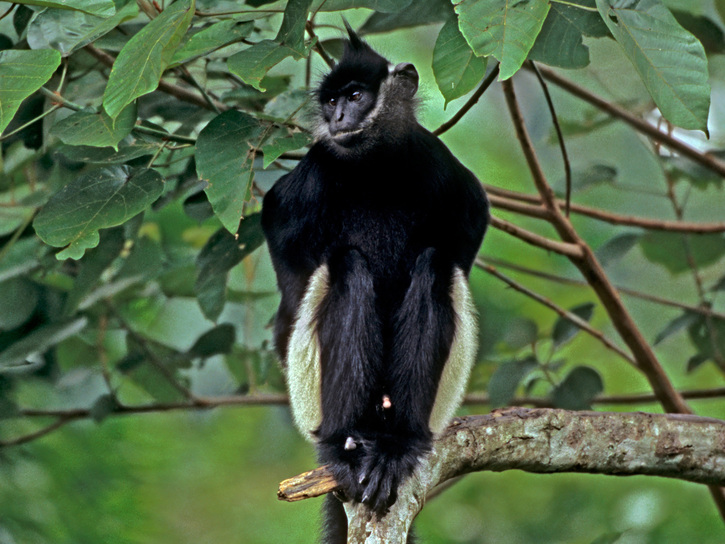
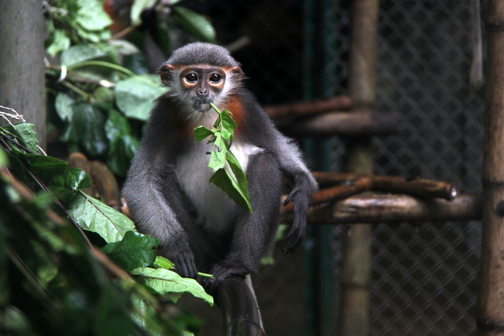
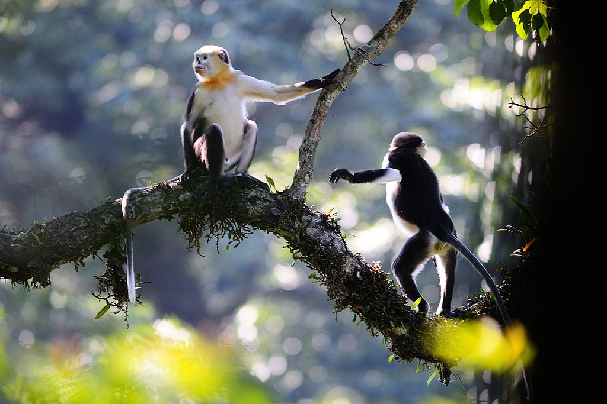
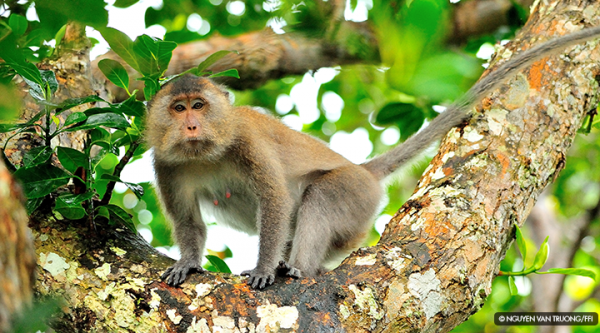
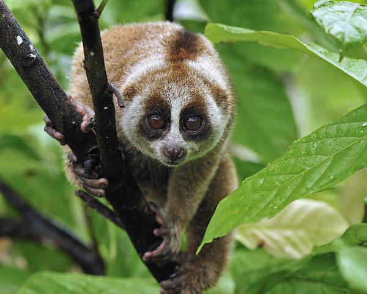
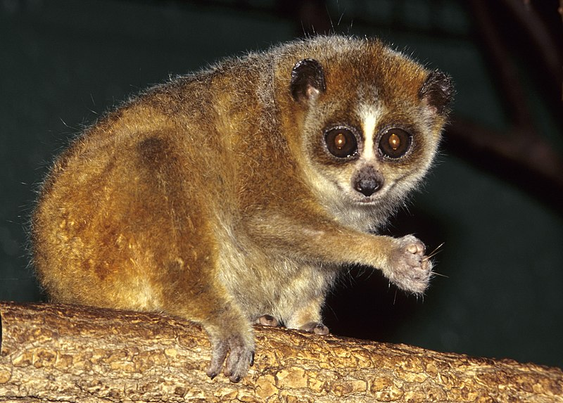

Trachypithecus delacouri Large-sized primates of the Old World Monkey family (Cercopithecidae), Primate (Primates), endemic to Vietnam. In Vietnam, a rare and endemic species, named in the "Red Book" of Vietnam and the world; should be protected. It is one of five primate species at risk of global extinction
Body weight 8.1 - 9 kg; head and body length 0.46 - 0.665 m. On the top of the head, there is a black crest, quite wide white hair streaks on the cheeks that extend above the ears. The legs have black fur. The white buttock extends up to the base of the tail and thighs; long limbs. The tail is longer than the body, the tail is black. Food is mainly for shoots, leaves and fruits.
Delacour's langurs are distributed in old forests, primary forests on rocky mountains with many caves. According to a survey by the Frankfurk Animal Protection Association (Germany) in Vietnam, the white-shanked langur is only in Vietnam with more than 200 individuals, distributed at 18 separate points in the provinces of Ninh Binh and Ha. Nam, Hoa Binh and Thanh Hoa. In Vietnam, Trachypithecus delacouri is concentrated in two places: Van Long wetland nature reserve and Cuc Phuong National Park
Pygathrix cinerea is an endemic species of Vietnam, distributed in the central Annamites, in the provinces of Quang Nam, Quang Ngai, Binh Dinh, Kon Tum and Gia Lai, Vietnam. The population of the population is estimated about 550 - 700. In 2016, Fauna & Flora International - Vietnam Program in Vietnam (Dr. Benjamin Rawson vs cs., 2016) announced the discovery of a population of 500 Pygathrix cinerea in the West. Vietnam and the total number of this species to 1000.
P. cinerea hunts down, culturally, interested in your problems, 20 years old, their ideas. Our 20 parts are part of each other. Software when fitteds
All three genera (Pygathrix nemaeus, Pygathrix cinerea and Pygathrix nigripes) have a gray body with white hairs on the buttocks. Shoulder and hands are black. The hair on the head is gray but has a black rim on the forehead. They have a white beard, while the neck is long, reddish. Their eyes are slightly slanted. Hand rub longer than legs. The tail is long and white. Males are slightly larger than females and weigh on average about 10.9 kg. The female weighs about 8.2 kg. The difference between the three types of patch is the fur from the bottom down. Pygathrix cinerea, as the name suggests, has gray legs. The arms are also gray. They have them very close to the red-footed scrub, while the black-footed-patch-rub is far from them
Pygathrix cinerea is a daytime active species that mainly lives in trees. They move through the branches by jumping and transmitting branches. In the past, they were usually found in large groups of 50 individuals, but this number has now decreased significantly from 4 to 15 individuals. Males are often the dominant and dominant role (this conclusion was made by observing them in captivity). The gray-footed scrub communicates with each other by touching, through images and hearing sounds. Roar is often a sign of anger. It could be a sign of intimidation of an individual. Gentle chirping is often a sign of obedience. The gray-shanked scrub usually grooms hair to remove parasites and to create and strengthen the bonds between members of the herd. This activity is usually done before dinner. Members can also show aggressive behavior by fighting, beating, pulling and pouncing each other. Visual communication includes facial expressions and various postures. Facial expressions can be grimace, showing obedience, a playful attitude when playing with other members, and staring at showing curiosity or anger. Facial expressions are also evident in the stage of partner selection. Males will look to the female to show that they are ready to mate. Their food is almost entirely leafy, but sometimes also adds seeds, fruit and flowers. They like young leaves and immature fruit
The mating season usually begins between August and December. The gestation period of females lasts from 165 to 190 days. When mating, males often show the appearance that they are ready to mate. They will hold their chin forward, shake their heads and raise or lower their eyebrows. The other will respond with the same action. This is repeated many times. The offspring will then agree to mate. The breeding season usually takes place between January and August, during the ripe fruit season. The mother will give birth to a calf weighing about 500 to 720g. Children will be able to start breeding when they are about 4 years old.
Rhinopithecus avunculus is an endemic monkeys endemic to northern Vietnam. The species has a white and dark brown coat, pink nose and lips and a special green turning area around the eyes. They are usually found at elevations of 200 to 1,200 m (700 to 3,900 ft) in forest patches in Tuyen Quang, Cao Bang, Yen Bai, Quang Ninh and Ha Giang. Coffee was discovered in the late 1860s when cleric Armand David sent the first individual to Europe but it was not until 1912 that it was first described for biology, then rediscovered in 1990 but still extremely rare period. By 2008, fewer than 250 individuals were thought to exist and the species was subject to special conservation. They are threatened by habitat loss and poaching, are listed as "endangered" by the International Union for Conservation of Nature and are also listed in the Vietnam Red Data Book.
The coffee has an upturned nose and large pink lips and a greenish area around the eyes and the muzzle. The hair on the back of them is dark brown, but the chest and abdomen are creamy white with an orange patch around the neck, especially in the male. They do not have any crest on top of head. The body length of the species ranges from 51 to 65 cm (20 to 26 in) plus the tail length from 66 to 92 cm (26 to 36 in). The female and male males have an average weight of about 8 kg (18 lb) and 14 kg (31 lb), respectively. Adult individuals have gray hair instead of black and do not have orange areas around the neck. Coffee is a nocturnal food with a variety of foods including leaves, fruits, flowers and seeds. They live entirely on trees, moving into small flocks.
Monkey Con Dao long tail is a subspecies of macaque distributed in Vietnam, concentrated in Con Dao, Phu Quoc. Monkey Con Dao long tail is endemic to Vietnam.
Regarding the origin of the Monkey Con Dao long tail, the evolutionary theory of the distribution, dispersion and origin of sub-species suggests that before 18,000 years ago, the sea level was lower than it is now, from the Eastern Peninsula. Ocean to Bali (Indonesia) is a large contiguous land and macaque distributed everywhere. After that, the sea level rose as high as today, forming islands, populations of long-tailed macaque living on isolated islands and forming a number of sub-species, including subspecies of Monkey Con Dao long tail.
Their coat color is usually gray to reddish-brown, behind the lighter body. The hair on the head grows back. Crested often. The face is pink. Males often have two white tufts of fur on their mouths on the sides like the mustache. The female has more sparse hair around her mouth. the apical part of the long-tailed macaque lives in the Can Gio mangrove forest and the Ca Mau mangrove forest is darker in color than the fur at the top of the Con Dao long-tailed macaque. The offspring are born black. The tail is long and well covered with feathers, the length of the tail is usually 3/4 or more than the body length. The male's tail is shorter than the land species. Maturity at 50 - 51 months. The gestation period is 160 - 170 days. The time between reproductive 13 months (12 - 24 months). Life time 37-38 years.
They live in primary, secondary forests, bamboo forests, evergreen forests, sparse forests, river banks, coastal areas, coastal mangroves, along rivers to an altitude of 2000m. At Con Dao National Park, there are at least 10 common sites, these are located on 3 islands: Con Son, Hon Ba, and Bay Bay Hon. Before 1975, this species was also common in forests in southern provinces from Thua Thien - Hue province to Kien Giang province with an estimated area of> 5,000 km2. Since 1975, the status of the species has changed dramatically. The number of population plummeted. The current number of sub-populations is about 30. The reason is that the habitat is encroached, the forest is cut down, the natural forest area is narrowed and this is the target for hunting for meat, cooking, trading and export. The main food is fruits (64%), seeds, nuts, leaves of other plant and animal parts such as insects and frogs, etc. They are active during the day and in the trees. This species swims very well and often jumps into the water from tree branches. Very often sitting in groups on the main road, do not panic when the car passes. They often live in groups, rarely encountering one. The structure has many males and females with an average of 2.5 females per male. They live in groups of 10-100 birds. The males usually mark the area less like other monkeys. The young often play with each other in the herd. They usually joke with each other for two years. Males often joke with males, females often joke with females.
Nycticebus coucang is a type of coolie belonging to the subfamily Li. This slow-moving primate has large eyes and small ears and is almost covered by shag. Their tail is just a dead end. This species lives on trees, foraging during the day. The Sunda Li lives in Asia.
The head is round, on the top of the head is dark brown stripes. Eyes widened. Around the eyes are reddish brown feathers. From the top of the head, there are two small light brown stripes running down the eyes. From the two ears, there are light brown hairs running to the top of the head and linked together. The dark brown hair runs down from the top of the head along the back and down the spine. The coat is smooth, reddish yellow, may also be pale yellow or gray. The chest is usually ash-gray. Yellowish belly. The hips and hind legs are red. Small size. Body length: 260 - 310mm, tail length: 19 - 40mm. The index finger is small, the second toe has claws, the other fingers have tubes. The first molar is bigger than the second molar.
Males and females mature after 21 months. The gestation period is 191 days. The interval between births is from 12 to 18 months. Life lasts about 20 years. The main food is fruits: 50%, animals: 30%, especially insects. Works at night. During the day, sleeping on a curled up tree, his face turned into his lap. They often nest in tree holes. Life climbs. Live alone or in groups of 3-4 individuals. The main living areas are bamboo forests, primary forests, shrubs, and secondary gardens. They prefer locations on the top of a mountain or a peak that can be as high as 1300m above sea level.
Domestic: Yen Bai (Ta Lang), Tuyen Quang (Ban Bung, Tat Ke), Bac Kan (Dinh Ca, Ban Thi, Ba Be, Cho Ra), Lang Son (Hoa Thong), Bac Ninh (Thang Long), Hoa Binh (Da Bac), Quang Tri (Lao Bao), Thua Thien - Hue (Bach Ma), Gia Lai (Koncharang), Kontum (Sa Thay, Mom Ray). World: Bangladesh, Myanmar, China, Laos, Cambodia, Thailand, Malaysia, Indonesia
Before 1975: This species was also common in forests from the Northern provinces to Gia Lai and Kontum on an area estimated at> 20,000 km2. Since 1975, the status of the species has changed dramatically. The number of population plummeted. The current number of sub-populations is about 30. The reason for the change is: The habitat is encroached, the forest is cut down, the area of the natural forest is narrowed and this is the target for hunting for ornamental purposes and trade. sale and export.
Nycticebus pygmaeus. This primate lives in subtropical and tropical dry broadleaf forests in Vietnam, Laos, China and Cambodia. About 72,000 live in the wild and around 200 are in captivity.
t looks like Nycticebus coucang, but is smaller and more yellow on the back. Around the eyes are yellowish-brown fur circles. There are two dark brown hairs running from the top of the head down to the eyes. From the two ears, there are two broad reddish brown streaks running from the top of the head and connected. The hair is soft, brownish brown alternating with little silver-white hair. Along the bridge of the nose are white streaks. Along the back there is no stripes or very translucent, white belly, silver gold. The second molars are larger than the first molars. The second toe has claws, the other toes have claws.
Females mature after 9 months, males after 17-20 months. The gestation period is 188 days (Weisenseel, 1995). Breeding season is from October to December. Each litter has 1-2 children. Life span lasts 20 years (Kappeler, 1991). Foods are pods, tree pods, insects, bird eggs, and young birds in nests and they usually eat tree sap (Tan, 1994). Night-time foraging activities. Likes to climb, moving faster than the large Lili (Tan, 1994). Live alone or in small groups of 3-4 children. They live in many different habitats. Adapted to thin, open forest conditions, on tree stumps, bushes, forest edges and upland fields.
Domestic: Lai Chau, Son La (Song Ma), Tuyen Quang (Chiem Hoa, Na Hang), Lang Son, Vinh Phuc (Phu Yen), Ha Tay (Ba Vi), Bac Giang (Luc Yen), Ha Giang, Hoa Binh, Ninh Binh (Cuc Phuong), Thanh Hoa (Hoi Xuan), Nghe An (Nghia Dan), Quang Binh (Phong Nha), Thua Thien - Hue (Bach Ma), Quang Nam and Da Nang (Son Tra), Kontum (Sa Thi), Gia Lai (An Khe, Kon Ha Nung, Koncharang, Kon Ka Kinh), Dak Lak (Buon Ma Thuot, Yok Don, Nam Ca, EaSup, EaKar, Dak Nong), Lam Dong (Bao Loc) , Khanh Hoa (Nha Trang), Dong Nai (Trang Bom), Ho Chi Minh City. World: Laos, Cambodia.
Before 1975: This species was also common in forests from the Northern provinces to Trang Bom, Ho Chi Minh City on an estimated area of> 20,000 km2.Since 1975, the status of the species has changed dramatically. The number of population plummeted. The current number of sub-populations is about 30. The reasons for the change are: The habitat is encroached, the forest is cut down, the area of the natural forest is narrowed and this is the target for hunting for ornamental purposes. trade and export password.
8 Ton That Thuyet, My Dinh, Tu Liem,
Ha Noi, Viet Nam.
0966469746 (Do Van Huan)
0666729716 (Nguyen Minh Nghia)
0522697743 (Duong Thanh Binh)
0849818969 (Le Van Phuong)
0373485924 (Nguyen Thanh Lam)
KawasakiZoo@gmail.com